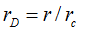
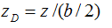
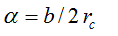
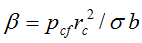
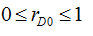
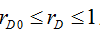
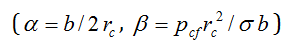

| Volume 1, Year 2014 - Pages 1-8 | View PDF (Full-text) |
| DOI: 10.11159/jffhmt.2014.001 | Linked References |
| ISSN: 2368-6111 | |
Shape of Liquid Bridges in a Horizontal Fracture
Morteza Dejam, Hassan Hassanzadeh*, Zhangxin Chen
Department of Chemical and Petroleum Engineering, Schulich School of Engineering, University of Calgary, 2500 University Drive NW,
Calgary, AB, Canada T2N 1N4
mdejam@ucalgary.ca; hhassanz@ucalgary.ca; zhachen@ucalgary.ca
Abstract- Transport phenomena in fractured porous media, which contribute to a considerable portion of the world oil recovery, is strongly affected by the interaction between fractures and the neighboring porous matrix blocks that may result in capillary continuity. Liquid bridges play a significant role in maintaining capillary continuity across porous blocks in fractured rocks. Capillary continuity created by liquid bridges is important in various fields such as oil recovery from naturally fractured oil reservoirs, water resources and environmental applications. In this paper, static liquid bridges are mathematically studied. A new dimensionless analysis of the Young-Laplace equation is developed, where the shape of the liquid bridge surface is characterized with two dimensionless parameters. Through this dimensionless scaling, under the absence of gravity, an integral describing the gas-liquid interface variation of a liquid bridge is obtained and evaluated numerically. The findings of this work improve our understanding of fluid flow in fractured porous media.
Keywords:Liquid bridge, Gas-liquid interface, Young-Laplace equation, Fracture capillary pressure, Dimensional analysis, Mathematical modeling, Fractured reservoirs.
© Copyright 2014 Authors - This is an Open Access article published under the Creative Commons Attribution License terms. Unrestricted use, distribution, and reproduction in any medium are permitted, provided the original work is properly cited.
Date Received: 2013-05-08
Date Accepted: 2014-08-08
Date Published: 2014-08-26
Nomenclature
b fracture aperture
Bo Bound number
C constant of integration
f (rD) a function defined by Eq. (13)
g gravitational acceleration
g (rD) a function defined by Eq. (11)
pcf fracture capillary pressure (or pressure difference across gas-liquid interface)
pgf gas pressure in fracture
plf liquid pressure in fracture
r radius
rc radius of line of contact of liquid bridge interface with faces of blocks
rD dimensionless radius
r0 radius at z = 0
rD0 dimensionless radius at zD = 0
R1 and R2 radii of curvature of curved bridge surface at any point
z vertical direction
zD dimensionless height
Greek Symbols
σ gas-liquid surface tension
α dimensionless parameter
β dimensionless parameter
∆ρ density difference between liquid and gas
Subscripts
c subscript for radius of line of contact of liquid bridge interface with faces of blocks
c capillary
cf fracture capillary
D dimensionless
f fracture
g gas
l liquid
o subscript for Bound number
0 subscript for r0 radius at z = 0
1, 2 subscripts for radii of curvature of curved bridge surface at any point
1. Introduction
A good understanding of transport phenomena in unsaturated fractured porous media is the key to the successful description of a number of industrial processes such as oil recovery from petroleum reservoirs [1-3], water resources and waste disposal management [4,5], and wicking of liquids connected to porous materials in printing or coating processes as well as cleaning applications [6,7]. For instance, Ghezzehei and Or [4] developed a theoretical model for liquid fragmentation along inclined fractures and then Or and Ghezzehei [5] applied this model to study the potential for more rapid arrival times of pollutants carried with discrete liquid elements along the inclined fractures compared to continuum liquid film flow on both fracture walls. Also, Dejam and Hassanzadeh [2] modeled capillary continuity between porous matrix blocks through formation of liquid bridges. Capillary continuity created by the liquid bridges can improve oil recovery from naturally fractured reservoirs substantially. Fracture capillary pressure and a block-to-block interaction between matrix blocks can significantly affect the transport of material from rock matrix blocks. The effect of these two important phenomena has been a source of uncertainty in predictions of oil recovery [8,9] and contaminant migration in subsurface formations [4,5] and requires further investigation. The block-to-block interaction between matrix blocks can be explained by the combination of two different phenomena: capillary continuity between blocks and reinfiltration of the drained liquid from upper to lower blocks. These processes cause drastic changes in the fluid transport between the rock matrix blocks. The capillary continuity phenomenon is an important contributor to oil drainage in fractured reservoirs and contaminant migration in fractured aquifers. Capillary continuity provides a strong communication between partially or completely isolated rock matrix blocks, thus creating an enhanced transport of liquids by gravity drainage [10]. The gravitational drainage efficiency of liquids from a column of stacked rock blocks is dictated by the continuous height of the liquid column [9]. In other words, capillary continuity increases the height of the continuous liquid column in a vertical column of fractured rock and thereby increases the recovery of oil.
Capillary continuity in vertically stacked matrix blocks has been studied extensively [9,11,12]. They investigated the properties of materials present in fractures and the effects of the overburden pressure as well as the relative permeability on the capillary continuity. Firoozabadi and Markeset [13] reported a series of experimental results in which they varied the fracture aperture and degree of contact between blocks. They observed that the formation and breakdown of liquid droplets across open fractures was one of the mechanisms of desaturation (i.e., a decrease of liquid saturation in the upper matrix block). Saidi [8] attempted to specify the conditions for having stable liquid bridges across fractures. He concluded that if the fracture aperture is about 50 μm or more, capillary continuity along a stack of matrix blocks cannot be realized. An important aspect is the critical fracture aperture, which is defined as the aperture below which liquid drops may form stable liquid bridges across the fractures. A formula for the critical aperture was suggested by Sajjadian et al. [14]. Aspenes et al. [1] experimentally showed that wetting phase bridges stabilize capillary continuity across open fractures and increase oil recovery. They discussed that the size of the bridges seems controlled by the wettability of the rock and not by the differential pressure applied across the open fractures.
Dejam et al. [15] studied the impact of fracture angle and aperture variations on a re-infiltration process through discrete traveling liquid elements and continuum film flow along inclined fractures between upper and lower porous matrix blocks. Thereafter, Haugen et al. [16] experimentally showed that how the fractures determine the oil displacement pattern differently depending on the matrix wettability conditions during waterflood in fractured porous media. Subsequently, Dejam and Hassanzadeh [2] studied the formation of liquid bridges between porous matrix blocks. They coupled a liquid element elongation model with various fracture capillary pressure models to study the liquid bridge formation phenomenon. They concluded that a threshold Bond number plays a significant role in the formation of liquid bridges between matrix blocks. Later, Mashayekhizadeh et al. [17] observed the free gravity drainage mechanism of oil at pore level using glass micromodels. They investigated the role of a fracture aperture and tilt angle on the stability of liquid bridges and the shape of a front during free gravity drainage process. Then, Zendehboudi and Chatsiz [18] experimentally visualized the oil recovery during controlled gravity drainage in a fractured porous medium through determination of the height difference between gas-liquid interfaces in the matrix and fracture.
Recently, Mashayekhizadeh et al. [19] considered the stability of liquid bridges in fractured porous media at the pore scale using a glass micromodel representing a stack of two blocks at different tilt angles to monitor the frequency and stability of liquid bridges formed during free-fall gravity drainage as a function of the tilt angle. They observed that by increasing the tilt angle, the liquid bridge frequency decreased but its stability increased and this resulted in higher ultimate recovery. Furthermore, Haugen et al. [20] experimentally studied the effect of the fractures on the oil recovery during foam injection in fractured media. In addition, Zendehboudi et al. [21] performed experiments and numerical simulations to investigate the effects of fracture properties, such as angle and aperture, on the behavior of free-fall and controlled gravity drainage processes. They concluded that the matrix-fracture interaction plays the most significant role in the liquid drainage from the fractured media. Zendehboudi et al. [21] showed that upon moderate inclination angles, enhanced recovery performance is achieved in controlled gravity drainage process due to more rapid liquid withdrawal. They also found that it is possible to develop an isolated liquid phase above a horizontal fracture when the fracture aperture is higher than the value required maintaining capillary continuity between matrix blocks.
A number of theoretical studies have investigated static liquid bridges [22-35]. The related studies in the literature are not limited to static liquid bridges. In the past decades, the dynamic evolution of the gas-liquid interface and the rupture of a liquid bridge have been the subject of numerous publications [36-40]. This article is focused on the shape of liquid bridges between rock matrix blocks and addresses the liquid bridges formed between two parallel plates. In the following section, an analysis of the Young-Laplace equation is presented. With the aid of this analysis, the shape of a liquid bridge can be expressed in terms of two dimensionless parameters.
This paper is structured as follows. First, a new dimensionless model is developed for the shape variations of the liquid bridges between porous matrix blocks. Then the results and discussions are presented, followed by the summary and conclusions.
2. Mathematical Modeling
Fig. 1 shows a liquid bridge in a horizontal fracture (with aperture b). As mentioned earlier, it is assumed that the lower face of the upper block and the upper face of the lower block are assumed to be flat and smooth; therefore, the liquid bridge is assumed to be between two parallel plates. Furthermore, it is assumed that the liquid bridge is at static conditions and the shape of the liquid bridge does not vary with possible longitudinal flow from the upper to lower blocks. In Fig. 1, z and r demonstrate polar coordinates where z is measured along the symmetry axis and r is the distance perpendicular to this axis. Moreover, it is assumed that the interface has axial symmetry in the absence of gravity; therefore, its shape can be defined by r(z).The Young-Laplace equation can be written in order to describe the capillary pressure in the absence of gravity inside the fracture as follows [41]:
where pcf is the fracture capillary pressure (or pressure difference across the gas-liquid interface), σ is the gas-liquid surface tension, and R1 and R2 are the radii of curvature of the curved bridge surface at any point and can be expressed as below [41]:
For our case, the Young-Laplace equation relates the curvature of the gas-liquid interface to the fracture aperture size, the gas-liquid surface tension, and the fracture capillary pressure caused by the pressure difference between liquid and gas in the fracture. In the absence of gravitational field, the mean curvature of the bridge surface [(1/R1) + (1/R2)] will be the same at any point of the interface [26,27].
Eq. (1) along with Eq. (2) leads to a nonlinear 2nd-order ODE. The boundary conditions are established from the contact angles between the gas-liquid and the faces of the upper and the lower matrix blocks. Schubert [25] detailed the solution of combined Eqs. (1) and (2) by transformation into either a 1st-order ODE or an integral equation. He also reviewed other efforts to solve Eq. (1) subject to Eq. (2). Schubert [25] provided graphical solutions to relate the capillary force, the contact angle and the volume of the liquid bridges for various configurations of grains. Firoozabadi and Hauge [27] used Schubert's graphical solutions [25] to find the capillary pressure as a function of saturation for fractures and spheres surrounded by flat plates. Hernández-Baltazar and Gracia-Fadrique [34] showed that the Young–Laplace equation of differential form can be solved under an elliptic representation for a fluid-fluid interface in the coordinate range of 0 to 90°. They found a simple analytical relation between the curvature radius and the elliptic parameters, which is applicable for drops and bubbles with elliptical and spherical shapes, while in this work an analysis of the Young-Laplace equation in terms of two dimensionless parameters is presented to investigate the shape of the liquid bridge in a horizontal fracture between two matrix blocks.
Since the fracture capillary pressure gives the pressure difference between liquid and gas in the fracture, it is possible to write it as:
Capillary pressure plays a significant role when two phases are in contact. Knospe and Nezamoddini [35] investigated the shape variation of a liquid bridge in a microactuator based upon the alteration of the capillary pressure within a conducting liquid bridge via the application of electric potential.
Let rc be the radius of the line of contact of the liquid bridge interface with the faces of the blocks, which is called the contact radius, and r0 the radius at z = 0, which is called the neck radius. Using two dimensionless variables,  and , Eq. (2) can be re-written in the following form:
where α is a dimensionless term, defined by . After substituting Eq. (4) into Eq. (1) and performing some manipulations, the following equation can be derived:
where β is a dimensionless term, defined by . Integrating both sides of Eq. (5), one can write:
in which C is the constant of integration. In order to determine the constant of integration, C, the following boundary conditions at zD = 0 can be used:
Using the above boundary conditions, the integration constant, C, can be found:
Substituting the value of the integration constant, provided in Eq. (8), into Eq. (6), the following expression is obtained:
After some simplifications, Eq. (9) can be reduced to:
where g(rD) expresses a function of rD as follows:
Eq. (10) can be integrated as follows:
The integral limits for the left-hand side vary from 0 to zD, while the integral limits of the right-hand side change from rD0 to rD. The ranges of variation of rD0 and rD are  and , respectively. For simplicity, the integrand of the above integral, Eq. (12), is substituted by f(rD):
Using Eq. (13), Eq. (12) can be written as:
Using Eq. (14), the profile of zD versus rD for a fixed value of rD0 can be obtained. The maximum values which rD and zD can have are denoted by rDc=1 and zDc=1. Integral (14) cannot be integrated analytically; therefore, it is integrated numerically using Simpson's 1/3 rule [42,43].
3. Results and Discussion
By eliminating the contact radius, rc, between the equations for dimensionless parameters, (), the relationship between α and β is obtained as follows:
which shows that β ~ α-2.
The representative values for parameters for the developed model are presented in Table 1. Using the values in Table 1 and assuming α = 1 and applying Eq. (15), the dimensionless parameter, β, is calculated as 0.1. Fig. 2 shows f (rD) versus rD for different values of rD0. Fig. 2 demonstrates that for a fixed value of rD0, by increasing rD, f (rD) decreases.
|
Parameter |
Representative value |
|
Oil-gas surface tension, σ (N/m) |
0.01 |
|
Fracture aperture, b (μm) |
40 |
|
Fracture capillary pressure, pcf (Pa) |
100 |
Fig. 3 demonstrates the variations of zD with respect to rD for different values of rD0. In other words, Fig. 3 demonstrates the shape variation of liquid bridges between two porous matrix blocks. As it is clear from Fig. 3, when the shape of the liquid bridge begins to vary, its central radius (the radius at z = 0, r0) reduces while the contact radius of the liquid bridge interface with the faces of the blocks remains fixed. The coordinate which represents the situation of the liquid bridge interface with the top plate in the first quadrant is rDc = 1, zDc = 1. Fig. 3 shows that the gas-oil interface of liquid bridges is symmetric because gravity was not considered.
For application of interest, the stability of liquid bridges between porous matrix blocks can play a significant role in oil recovery from naturally fractured reservoirs. Some factors such as axial flow from an upper matrix block, discharging through a lower matrix block and fracture roughness affect the stability of liquid bridges and make it complex to study and analyze. Including these complexities in determination of the shape variation of liquid bridges in a fracture needs further investigation. However, the developed model motivates experimental works in this area.
4. Summary and Conclusions
Formation of liquid bridges can cause capillary continuity between porous matrix blocks, improve oil drainage from naturally fractured reservoirs and affect contaminant migration in fractured rocks. This paper presented a theoretical study of the static shape of liquid bridges. Here, a new dimensionless analysis of the Young-Laplace equation is developed, in which the shape of the liquid bridge surface can be written in terms of α and β as defined dimensionless parameters. For a limiting case with zero gravity an integral describing the gas-liquid interface variation of a liquid bridge is obtained which has been solved numerically. The analysis presented may be useful for a stability analysis of perturbed liquid bridges subject to axial flow from an upper matrix block and discharging through a lower matrix block in fractured porous media.
Acknowledgements
Financial support of NSERC/AI-EES (AERI)/Foundation CMG and AITF (iCORE) Chairs Funds is gratefully acknowledged. The first author would like to thank Mohammadreza Kamyab for his help during preparation of this manuscript. Also, Morteza is appreciative of the support of his parents, Dariush Dejam and Zahra Fakhari. They have been a source of encouragement and inspiration.
References
[1] Aspenes E., Ersland G., Graue A., Stevens J., Baldwin B.A. (2008). Wetting phase bridges establish capillary continuity across open fractures and increase oil recovery in mixed-wet fractured chalk. Transport in Porous Media, 74, 35-47. View Article
[2] Dejam M., Hassanzadeh H. (2011). Formation of liquid bridges between porous matrix blocks. AIChE Journal, 57, 286-298. View Article
[3] Dejam M., Ghazanfari M.H., Kamyab M., Masihi M. (2011). The gas-oil gravity drainage model in a single matrix block: a new relationship between relative permeability and capillary pressure functions. Journal of Porous Media, 14, 709-720. View Article
[4] Ghezzehei T.A., Or D. (2005). Liquid fragmentation and intermittent flow regimes in unsaturated fractured porous media. Water Resources Research, 41, W12406. View Article
[5] Or D., Ghezzehei T.A. (2007). Traveling liquid bridges in unsaturated fractured porous media. Transport in Porous Media, 68, 129-151. View Article
[6] Gat A.D., Navaz H.K., Gharib M. (2012). Wicking of a liquid bridge connected to a moving porous surface. Journal of Fluid Mechanics, 703, 315-325. View Article
[7] Navaz H., Zand A., Atkinson T., Gat A.D., Nowakowski A., Paikoff S. (2014). Contact dynamic modeling of a liquid droplet between two approaching porous materials. AIChE Journal, 60, 2346-2353. View Article
[8] Saidi A.M. (1987). "Reservoir Engineering of Fractured Reservoirs-Fundamentals and Practical Aspects", Total Edition Press. View Book
[9] Horie T., Firoozabadi A., Ishimoto K. (1990). Laboratory studies of capillary interaction in fracture/matrix systems. SPE Reservoir Engineering, 5, 353-360. View Article
[10] Firoozabadi A., Markeset T. (1995). Laboratory studies in fractured porous media. Part I. Reinfiltration for gas-liquid systems. In Situ, 19, 1-21.
[11] Labastie A. (1990). Capillary continuity between blocks of a fractured reservoir. SPE 20515, "Proceeding of SPE Annual Technical Conference and Exhibition", New Orleans, Louisiana, Sep. 23-26. View Article
[12] Stones E.J., Zimmerman S.A., Chien C.V., Marsden S.S. (1992). The effect of capillary connectivity across horizontal fractures on gravity drainage from porous media. SPE 24920, "Proceeding of 67th Annual Technical Conference and Exhibition of the Society of Petroleum Engineers", Washington, DC, Oct. 4-7. View Article
[13] Firoozabadi A., Markeset T. (1994). An experimental study of the gas-liquid transmissibility in fractured porous media. SPE Reservoir Evaluation and Engineering, 9, 201-207. View Article
[14] Sajjadian V.A., Danesh A., Tehrani D.H. (1998). Laboratory studies of gravity drainage mechanism in fractured carbonate reservoir-capillary continuity. SPE 49497, "Proceeding of International Petroleum Exhibition and Conference", Abu Dhabi, United Arab Emirates, Nov. 11-14. View Article
[15] Dejam M., Ghazanfari M.H., Masihi M. (2009). Theoretical modeling of reinfiltration process in naturally fractured reservoirs: a comparative study on traveling liquid bridges and continuum film flow approaches. SPE 125307, "Proceeding of SPE/EAGE Reservoir Characterization and Simulation Conference", Abu Dhabi, United Arab Emirates, Oct. 19-21. View Article
[16] Haugen A., Fernø M.A., Bull Ø., Graue A. (2010) Wettability impacts on oil displacement in large fractured carbonate blocks. Energy & Fuels, 24, 3020-3027. View Article
[17] Mashayekhizadeh V., Ghazanfari M.H., Kharrat R., Dejam M. (2011). Pore-level observation of free gravity drainage of oil in fractured porous media. Transport in Porous Media, 87, 561-584. View Article
[18] Zendehboudi S., Chatzis I. (2011). Experimental study of controlled gravity drainage in fractured porous media. Journal of Canadian Petroleum Technology, 50, 56-71. View Article
[19] Mashayekhizadeh V., Kharrat R., Ghazanfari M.H., Dejam M. (2012). An experimental investigation of fracture tilt angle effects on frequency and stability of liquid bridges in fractured porous media. Petroleum Science and Technology, 30, 807-816. View Article
[20] Haugen A., Fernø M.A., Graue A., Bertin H.J. (2012). Experimental study of foam flow in fractured oil-wet limestone for enhanced oil recovery. SPE Reservoir Evaluation & Engineering, 15, 218-228. View Article
[21] Zendehboudi S., Rezaei N., Chatzis I. (2012). Effects of fracture properties on the behaviour of free-fall and controlled gravity drainage processes. Journal of Porous Media, 15, 343-369. View Article
[22] Fisher R.A. (1926). On the capillary forces in an ideal soil; correction of formulae given by W. B. Haines. Journal of Agricultural Science, 16, 492-505. View Article
[23] Batchelor G.K. (1967). "An Introduction to Fluid Dynamics", Cambridge University Press. View Book
[24] Erle M.A., Dyson D.C., Morrow N.R. (1971). Liquid bridges between cylinders, in a torus, and between spheres. AIChE Journal, 17, 115-121. View Article
[25] Schubert H. (1982). "Kapillarität in Porösen Feststoffsystemen (in German)", Springer-Verlag. View Book
[26] Fortes M.A. (1982). Axisymmetric liquid bridges between parallel plates. Journal of Colloid and Interface Science, 88, 338-352. View Article
[27] Firoozabadi A., Hauge J. (1990). Capillary pressure in fractured porous media. Journal of Petroleum Technology, 42, 784-791.
[28] Langbein D. (1992). Stability of liquid bridges between parallel plates. "Proceeding VIIIth European Symposium on Materials and Fluids Sciences in Microgravity", Brussels, Belgium, Apr. 12-16. View Article
[29] Lian G., Thornton C., Adams M.J. (1993). A theoretical study of the liquid bridge forces between two rigid spherical bodies. Journal of Colloid Interface Sciences, 161, 138-147. View Article
[30] Simons S.J.R., Seville J.P.K., Adams M.J. (1994). An analysis of the rupture energy of pendular liquid bridges. Chemical Engineering Science, 49, 2331-2339. View Article
[31] Willett C.D., Adams M.J., Johnson S.A., Seville J.P.K. (2000). Capillary bridges between two spherical bodies. Langmuir, 16, 9396-9405. View Article
[32] Kralchevsky P.A., Nagayama K. (2001). "Studies in Interface Science: Particles at Fluid Interfaces and Membranes", Elsevier. View Book
[33] Rynhart P., McKibbin R., McLachlan R., Jones J.R. (2002). Mathematical modeling of granulation: static and dynamic liquid bridges. Res. Lett. Inf. Math. Sci., 3, 199-212. View Article
[34] Hernández-Baltazar E., Gracia-Fadrique J. (2005). Elliptic solution to the Young-Laplace differential equation. Journal of Colloid and Interface Science, 287, 213-216. View Article
[35] Knospe C.R., Nezamoddini S.A. (2009). Capillary force actuation. Journal of Micro-Nano Mechatronics, 5, 57-68. View Article
[36] Zhang X., Padgett R.S., Basaran O.A. (1996). Nonlinear deformation and breakup of stretching liquid bridges. Journal of Fluid Mechanics, 329, 207-245. View Article
[37] Mikami T., Kamiya H., Horio M. (1998). Numerical simulation of cohesive powder behavior in a fluidized bed. Chemical Engineering Science, 53, 1927-1940. View Article
[38] Shi D., McCarthy J.J. (2008). Numerical simulation of liquid transfer between particles. Powder Technology, 184, 64-75. View Article
[39] Darabi P., Li T., Pougatch K., Salcudean M., Grecov D. (2010). Modeling the evolution and rupture of stretching pendular liquid bridges. Chemical Engineering Science, 65, 4472-4483. View Article
[40] Qian B., Breuer K.S. (2011). The motion, stability and breakup of a stretching liquid bridge with a receding contact line. Journal of Fluid Mechanics, 666, 554-572. View Article
[41] Adamson A.W. (1982). "Physical Chemistry of Surfaces, 4th edition", John Wiley & Sons Inc.. View Book
[42] Gerald C.F., Wheatley P.O. (1999). "Applied Numerical Analysis, 6th edition", Addison-Wesley. View Book
[43] Rao S.S. (2001). "Applied numerical methods for engineers and scientists, 1th edition". Prentice Hall Professional Technical Reference. View Book
[44] Firoozabadi A., Katz D.L., Soroosh H., Sajjadian V.A. (1988). Surface tension of reservoir crude-oil/gas systems recognizing the asphalt in the heavy fraction. SPE Reservoir Engineering, 3, 265-272. View Article